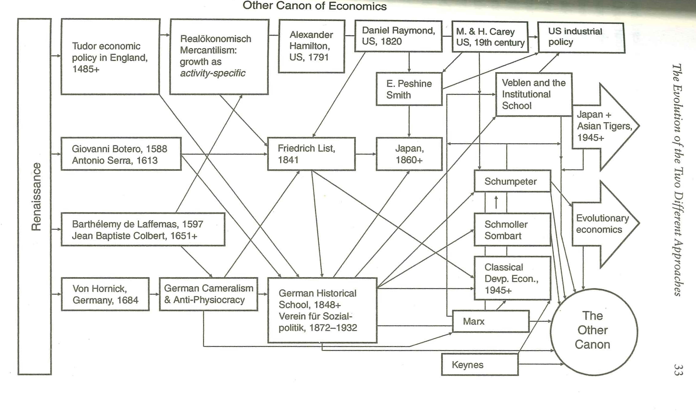
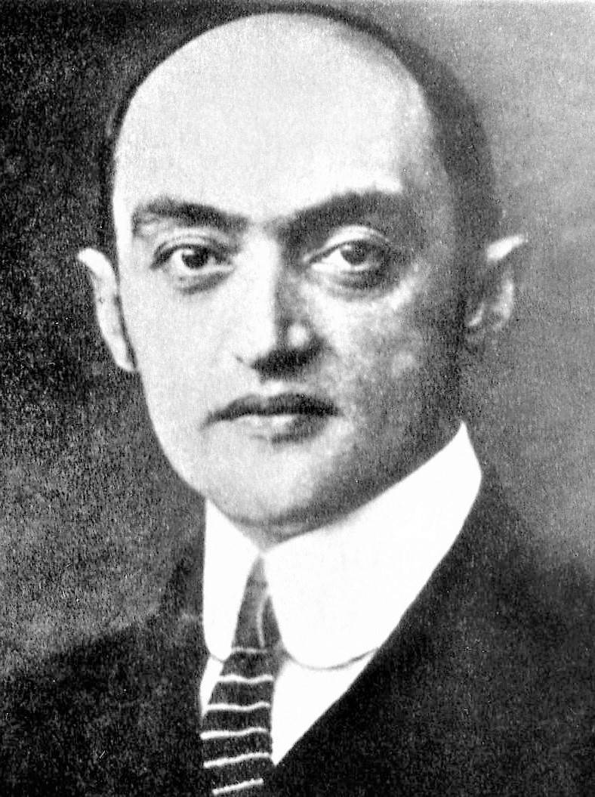
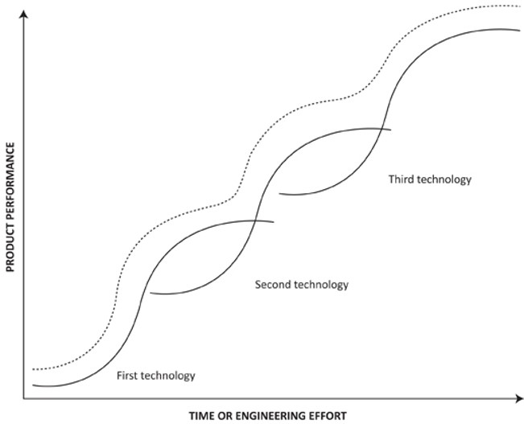

Pol2012: Theories and Models in Political Economy
Evolutionary Economics
Marius Swane Wishman
The Other Cannon
Evolutionary economics
- How and why has the economy evolved historically?
- What causes and shapes economic growth?
- Historical analysis
Joseph Schumpeter (1883-1950)
Joseph Schumpeter (1883-1950)
- Structural change
- Creative destruction
Joseph Schumpeter (1883-1950)
Is it as simple as Schumpeter made it look?

The Quality of Economic Activity
- Production not exchange
- Moving up the value-chain
The Quality of Economic Activity

Trade and Production
"I saw clearly that free competition between two nations which are highly civilised can only be mutually beneficial in case both of them are in a nearly equal position of industrial development, and that any nation which owing to misfortunes is behind others in industry, commerce, and navigation .. must first of all strenghten her own individual powers, in order to fit herself to enter into free competition with more advanced nations." - Fredrich List (1841)